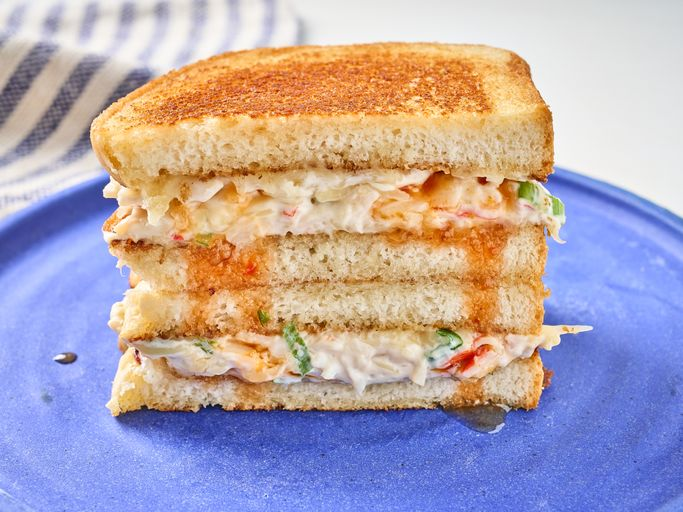

Home
Crab Grilled Cheese
This wonton crab grilled cheese takes the American Chinese restaurant favorite, crab Rangoon, and fuses it with grilled cheese. It's extra crispy with the bread toasted inside and out.

Ingredients
- 1 Cup whipped cream cheese
- 8 ounces imitation crab meat, chopped
- 1/4 cup chopped green onions
- 1/4 cup soy sauce
- 2 teaspoons sesame oil
- 2 teaspoons garlic powder
- 1/4 cup mayonnaise
- 8 thick slices bread
- 1/4 cup sweet chili sauce, plus more for serving
Directions
- Combine cream cheese, crab meat, green onions, soy sauce, sesame oil, and garlic powder in a bowl. Mix until well combined. Set aside.
- Spread mayonnaise on 1 side of each bread slice. Place a large skillet over medium heat, and toast bread, mayonnaise side down, until golden brown. Set aside.
- Spread crab mixture on toasted side of 4 slices of bread, drizzle with sweet chili sauce, and place the other 4 bread slices, toasted side down, on top.
- Spread mayonnaise on untoasted sides of bread, place back into the skillet over medium heat, and toast, turning once, until both sides are golden brown. Serve immediately with extra chili sauce